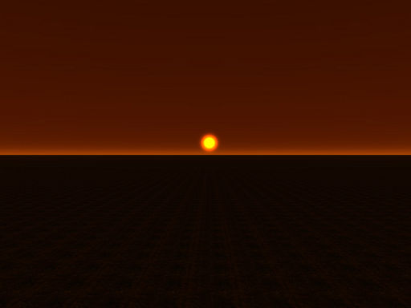
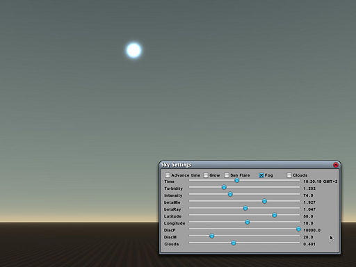
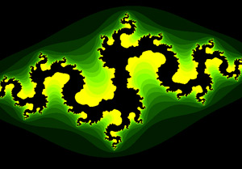
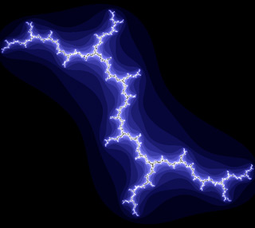
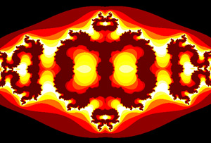

Shader Contest
From C4 Engine Wiki
The C4 Engine shader contest ran from April 5 to May 1, 2009. The goal was to create the most interesting shader using the shader editor tools that ship with C4. Contest entries were judged on function, ingenuity, originality, and performance.
The winning entries can be downloaded at the following location. Unzip the file at the top level of the Data folder.
Download winning entries (240 kb zip)
First Place
First place went to Thomas Einsporn for designing a sky shader that implements atmospheric scattering effects to produce physically accurate sky colors. The shader combines extinction and in-scattering calculations along rays pointing from the camera into the sky, and it allows several parameters, such as sun position, to be controlled from a script. The two images below show the sky shader's output at two different times of day.
A more elaborate description of how to use the shader will follow in the next few days.
|  |  |
Second Place
Second place went to Teemu Väisänen for designing the car paint shader shown to the right. This shader uses a Fresnel environment reflection in the ambient pass, and it adds a view-dependent diffuse reflection gradient in the lighting pass. The lighting pass also includes dual specularities (one soft and one sharp) that are modulated by a paint speck texture. The image below shows a color variant of the shader applied to a car model.
Third Place
Third place went to Andrew Marx for designing a shader that renders Julia sets. The shader allows several inputs, such as the complex coordinates and color information, to be controlled from a script. A few example images produced by the shader are shown below.
|  |  |  |